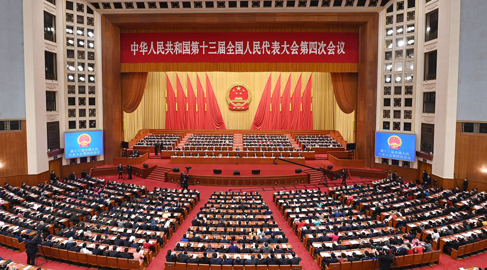
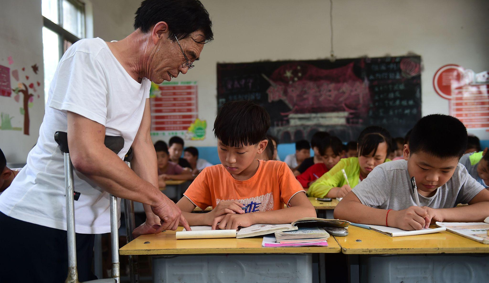

从1921年到2021年，中国共产党走过了整整100年的光辉历程。100年来，中国共产党带领全国各族人民建立了新中国，让人民当家作主，从此中国人迈上了幸福的康庄大道，日子过得越来越好，国家越来越繁荣昌盛。人民物质生活水平不断提高离不开国家和党坚持不懈的努力。每一项政策的发布都是党和国家为我国持续发展所做的决定，每一项政策都是党和国家深思熟虑过后的结果。我国各项政策数不胜数，惠民政策更是努力地为人民谋福利。每一次的全国人民代表大会不仅是为了传达党和中央的决定，更是为了联系人民群众，听到群众的呼声，了解群众的需求，让国家机关的决策和制定的法律、措施更加符合实际，符合民意，更加民主化、科学化。

第一条：延长小微企业融资担保降费奖补政策。
第二条：居民医保人均财政补助标准再增加30元。
第三条：提高退休人员基本养老金。
第四条：解决好大城市住房突出问题。
第五条：解决进城务工人员子女就学问题。
第六条：制定生态保护补偿条例。
第七条：保持土地承包关系稳定并长久不变。
第八条：对脱贫县从脱贫之日起设立5年过渡期。

1、学前教育省政府助学金。
2、义务教育阶段实施“两免一补”（免除学杂费、免费提供教科书，寄宿生生活补助）和农村义务教育阶段营养改 善计划政策。
3、普通高中家庭经济困难学生国家助学金。
4、高中建档立卡家庭经济困难学生免学杂费。
5、高中建档立卡贫困户家庭经济困难学生生活费补助。
1、产业发展脱贫。
2、转移就业脱贫。
3、易地搬迁脱贫。
4、教育扶贫。
5、健康扶贫。
6、生态保护扶贫。
7、兜底保障。
8、社会扶贫。
一、总体要求
二、完善公平适度的待遇保障机制
三、健全稳健可持续的筹资运行机制
四、建立管用高效的医保支付机制
五、健全严密有力的基金监管机制
六、协同推进医药服务供给侧改革
七、优化医疗保障公共管理服务
八、组织保障
一、新时代实施乡村振兴战略的重大意义
二、实施乡村振兴战略的总体要求
三、提升农业发展质量，培育乡村发展新动能
四、推进乡村绿色发展，打造人与自然和谐共生发展新格局
五、繁荣兴盛农村文化，焕发乡风文明新气象
六、加强农村基层基础工作，构建乡村治理新体系
七、提高农村民生保障水平，塑造美丽乡村新风貌
八、打好精准脱贫攻坚战，增强贫困群众获得感
九、推进体制机制创新，强化乡村振兴制度性供给
十、汇聚全社会力量，强化乡村振兴人才支撑
十一、开拓投融资渠道，强化乡村振兴投入保障
十二、坚持和完善党对“三农”工作的领导